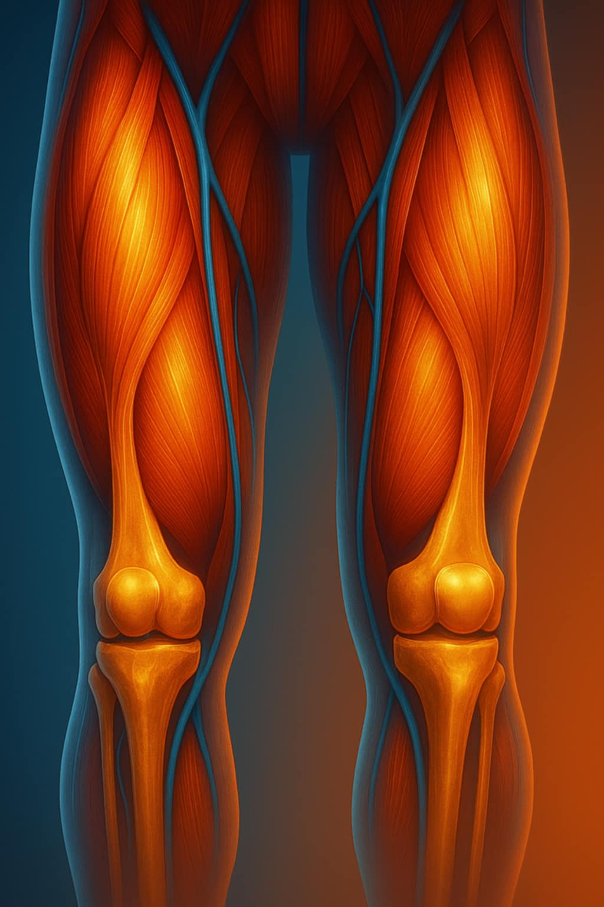
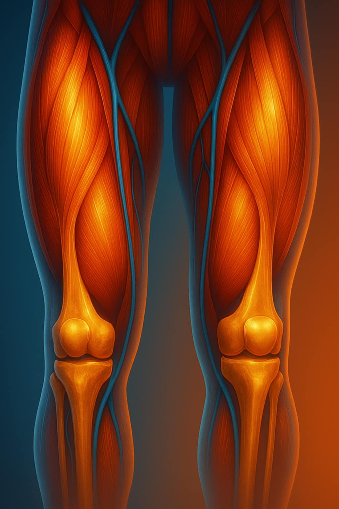

Biodra
Ból promieniujący, sztywność przy chodzeniu.
Uda
Ból mięśniowy i przeciążeniowy.

Stopy
Różne bóle mięśni, ścięgien, stawów.
Kliknij ilustrację, aby zobaczyć możliwe przyczyny bólu.
Ból promieniujący, sztywność przy chodzeniu.
Ból mięśniowy i przeciążeniowy.
Różne bóle mięśni, ścięgien, stawów.